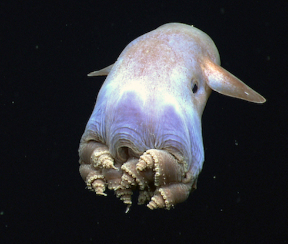
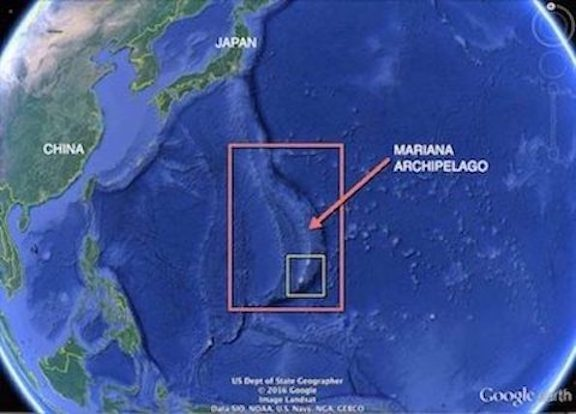
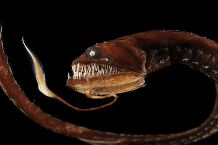
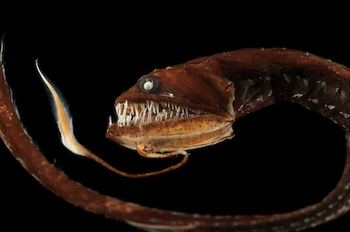

The Deepest Trench on Earth
Have you ever heard about the Mariana Trench?
The Mariana Trench is one of the most deepest points on Earth that has been discovered by scientist. It is located in the western Pacific Ocean
and measures about 2,550 km in length and 69 km in width.
It's deeper than Mount Everest and nobody has ever touched its floors!
So what lies in the mariana trench?
- Animals! The three most common organisms at the bottom of the Mariana Trench are xenophyophores, amphipods and small sea cucumbers (Oskin, 2022).
- Other dangerous predators and unusal creators such as the Deep-Sea Dragonfish and Mariana snailfish.
- A plastic bag? "A recent study revealed that a plastic bag, like the kind given away at grocery stores, is now the deepest known piece of plastic trash,
found at a depth of 10,975 meters (36,000 feet) inside the Mariana Trench" (National Geographic).
- You can refer to these two websites below for more information!
https://education.nationalgeographic.org/resource/plastic-bag-found-bottom-worlds-deepest-ocean-trench
https://www.livescience.com/23387-mariana-trench.html
Into the Abyss


 
